F5 Identity and Access Management Solutions > 400 Series: Access Automation Source | Edit on
Lab 1: Create a baseline Per-Session Policy¶
In this lab you will learn about the API calls necessary to build the basline Access Policy as if you had clicked create from GUI. The graphic below depicts the basic flow required for creating a policy via API.
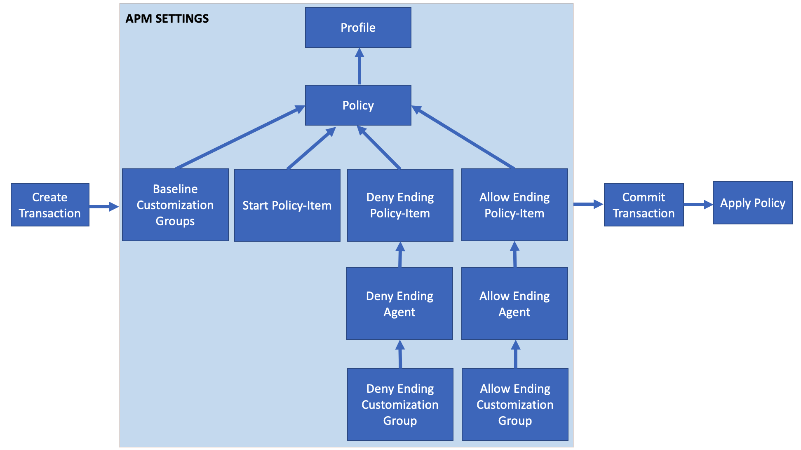
Task 1 - Access Lab Environment¶
To access your dedicated student lab environment, you will need a web browser and Remote Desktop Protocol (RDP) client software. The web browser will be used to access the Unified Demo Framework (UDF) Training Portal. The RDP client will be used to connect to the jumphost, where you will be able to access the BIG-IP management interfaces (HTTPS, SSH).
Click DEPLOYMENT located on the top left corner to display the environment
Click ACCESS next to jumphost.f5lab.local

Select your RDP resolution.
The RDP client on your local host establishes a RDP connection to the Jump Host.
Login with the following credentials:
- User: f5lab\user1
- Password: user1
Task 2 - Import Postman Collections¶
From the Jumphost, open Postman via the desktop shortcut or toolbar at the bottom
Note
Dismiss any prompts to update Postman.

Click Yes if prompted for “Do you want to allow this app to make changes to your device?”

Click Import located on the top left of the Postman application

Click Upload Files

Navigate to C:\access-labs\class4\module2\student_files, select student-class4-module2-lab1.postman_collection.json, and click Open
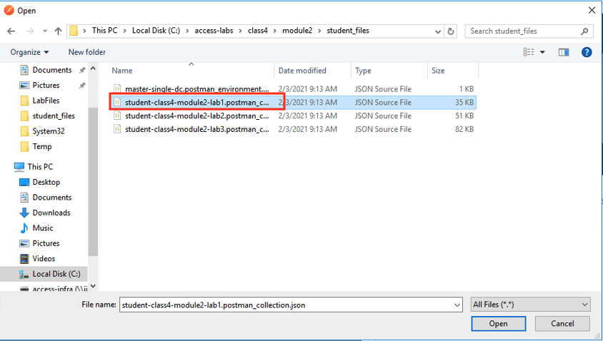
Click Import
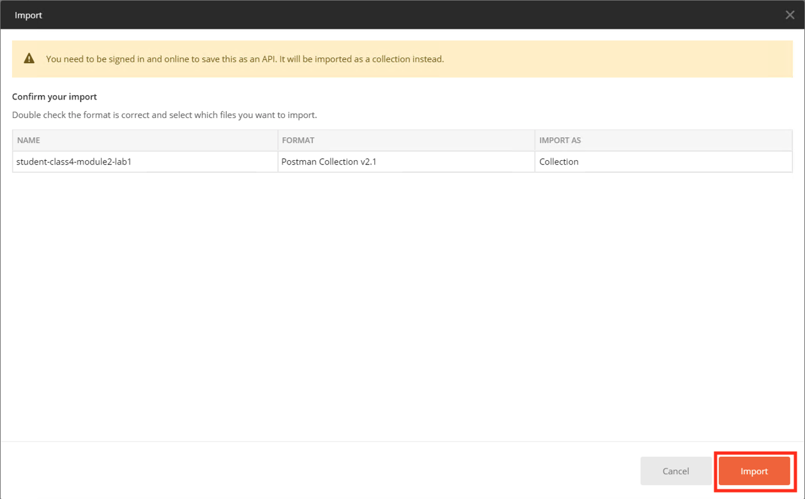
A collection called student-class4-module2-lab1 will appear on the left side in Postman
Task 3 - Explore the icontrolRest Endpoints¶
Expand the student-class4-module2-lab1 collection and the Create Policy folder to see its subfolders.
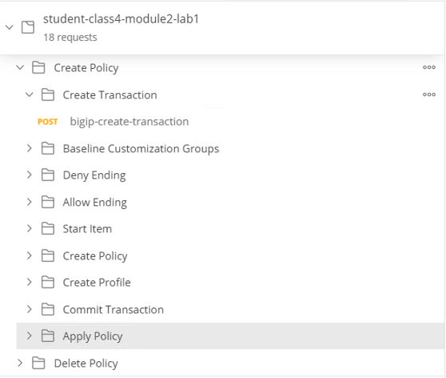
Expand the Create Transaction subfolder and click on the request bigip-create-transaction
Note
When creating or modifying a policy it must be performed within a transaction. A transaction occurs in multiple steps. First, you create the transaction by receiving a transaction ID from the BIG-IP. Next, you pass subsequent configuration requests that contain the transaction ID header to the BIG-IP. The BIG-IP does not process these requests. Instead it holds those requests until the transaction is commited in the final step. It’s important to understand that transactions have an all or nothing approach. Either every request in the transaction is processed sucessfully or none of the configuration changes are made. This is extremely important to ensure all the required information is correct for building a working policy.
Click on Body. The only thing in the Body are open and close curly braces.
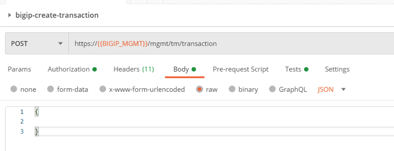
Click on Tests in Postman, Tests are performed after the response from the endpoint is retreived. This javascript parses the response body for the transId and saves it as a variable for use in subsequent requests.
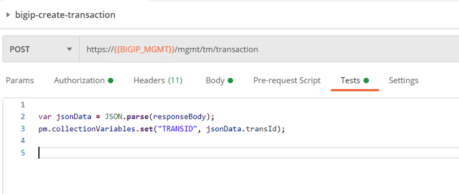
Click the blue Send button in the upper right corner.
You will receive a 200 OK. The response body contains the transaction ID. Also, notice that there is a default timeout value of 300 seconds for the transaction to complete.
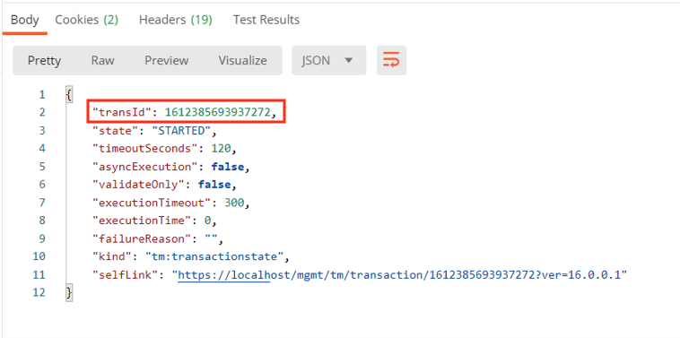
Expand the Baseline Customization Groups subfolder. There are five mandatory customization groups created anytime an APM Per-Session Policy is created. A Customization Group defines the look of a particualar object such as the difference between the logout page on 13.1 and 15.1. Not all policy-items have a customization group. Any Agent that is enduser facing will have a customization group associated with it. That includes items such as logon pages, webtops, logout pages. Whereas something such as an Active Directory Authentication will not have a customization group.
Click bigip-create-customization group-logout
Click on Headers. A header is inserted into each request called X-F5-REST-Coordination-Id that references a Postman variable. That variable contains the transId stored from the previous bigip-create-transaction request. All Requests inside the transaction MUST have that header.
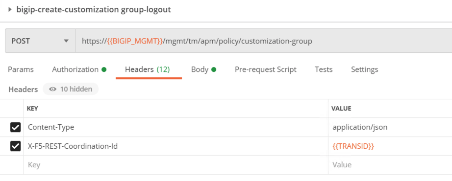
Cick on Body. Customization is done by setting the source JSON key to either /Common/modern or /Common/standard. This lab uses a Postman variable that references /Common/modern.
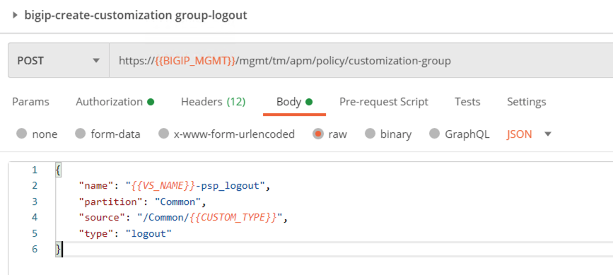
The four remaining requests in the Baseline customization Group subfolder all look the same except the value of the type JSON Key is different. If click through you will notice they all hit the same endpoint of /mgmt/tm/apm/policy/customization-group
Expand the Deny Ending subfolder
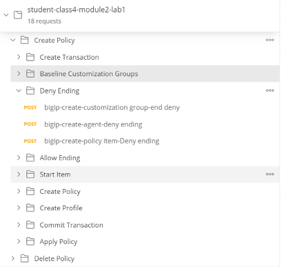
To create a Deny Terminal in a policy it takes three requests. A good rule of thumb is every object you manually build in Visual Policy Editor will take three Requests The first defines a customization group, the second defines an agent, and the third defines a policy-item.
Click bigip-create-customization group-deny emding. This customization group request is same as all previous customization group requests except for the name and the value of the type JSON key is logout
Click bigip-create-agent-deny ending. An agent contains the operational settings for that object. For example, an AD authentication agent would contain the list of AD servers to be used or a SAMl Agent would contain the SAML Service Provider to be used. In the case of an ending it will only contain the previously defined customization group.
The endpoint is /mgmt/tm/apm/policy/agent/ending-deny. Each agent type has its own endpoint unlike customization groups.
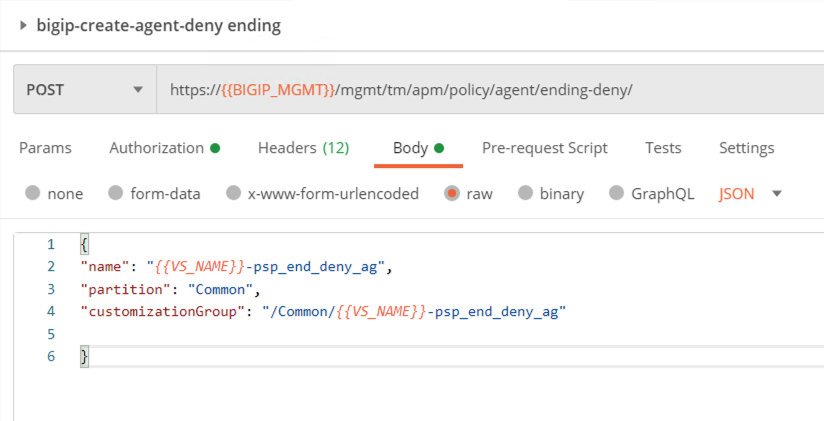
Click bigip-create-policy item-deny ending. A Policy-Item contains all the settings related to its placement in the flow such as branch rules. Since this is an ending we will not see any branch rules but will see references to this policy-item after a few more steps. Additional settings of how the ending is displayed in Visual Policy Editor are also specified here such as caption and color. Lastly there will always be a reference to an Agent via its name. The agent specified is the agent in the previous request.
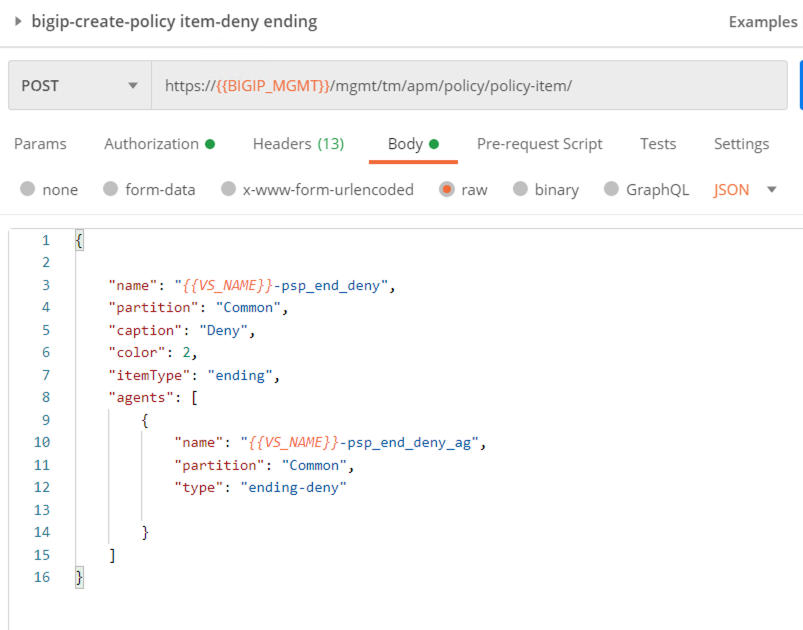
Expand the Allow Ending subfolder
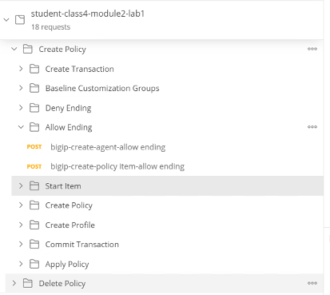
There is only an agent and policy-item. If the connection is allowed the user will not be see anything displayed from APM so no need for a customization group. This is an example of a policy-item that is not enduser facing.
Click Body. The allow agent only contains a name and partition.
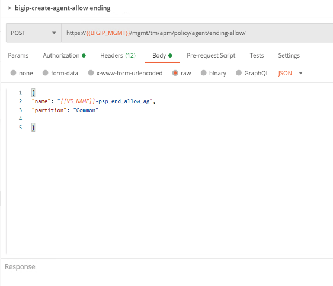
Click bigip-create-policy item-allow ending. Then, click Body.
The structure of an allow ending is similiar to the previous deny ending. Since this is an ending it doesn’t contain any branch rules.
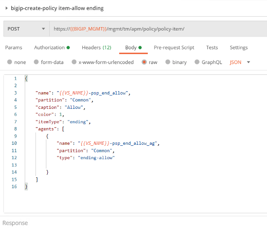
Expand the Start Item subfolder and notice there is only a single request. There is not an agent or customization group required for the start-item.
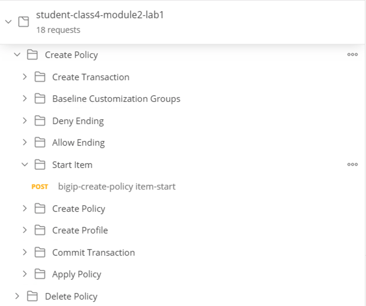
Click bigip-create-policy item-start and then Body
The Rules JSON key defines the branch rules for a policy-item. All Policy-items except for terminal endpoints contain a rules condition. In this case, the Start policy-item connects to the Deny Terminal. Secondly, the Rules JSON key is defined as an array because of the brackets. This will allow the definition of multiple branch rules using expressions. An example of this is an authentication Policy-item having a success and failure branch. This will be covered in future labs.
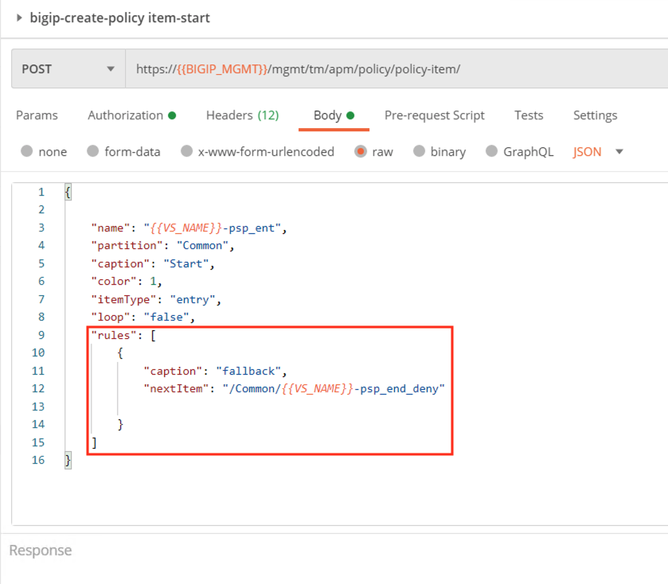
Expand the Create Policy subfolder
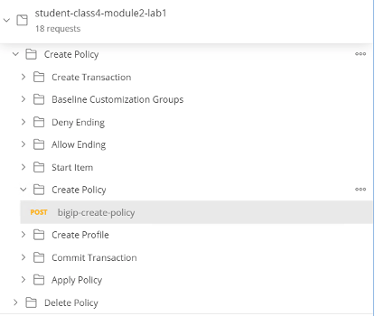
Click bigip-create-policy and then Body
In order to create a policy all of the policy-items MUST be defined inside the items JSON key array. In this case we are only building a empty policy so only three items Start Item, Deny Terminal, and Allow Terminal are defined.
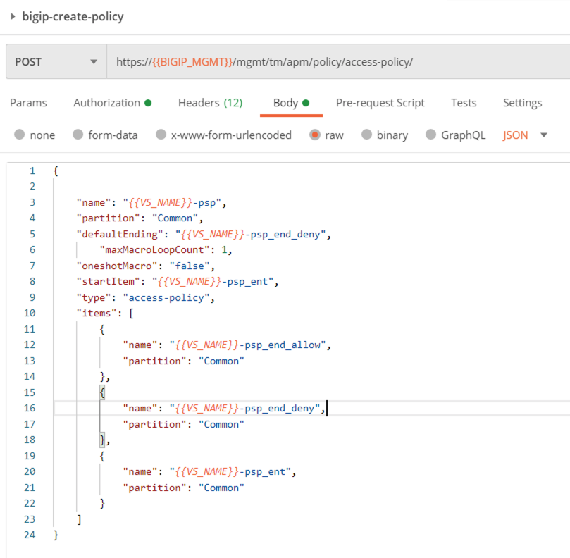
Expand the Create Profile subfolder.
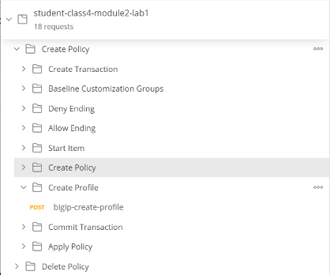
Click bigip-create-profile and then Body. It contains the various setting related to timers, sessions, and logging. The body also contains the five baseline customization groups defined at the beginning of the collection.
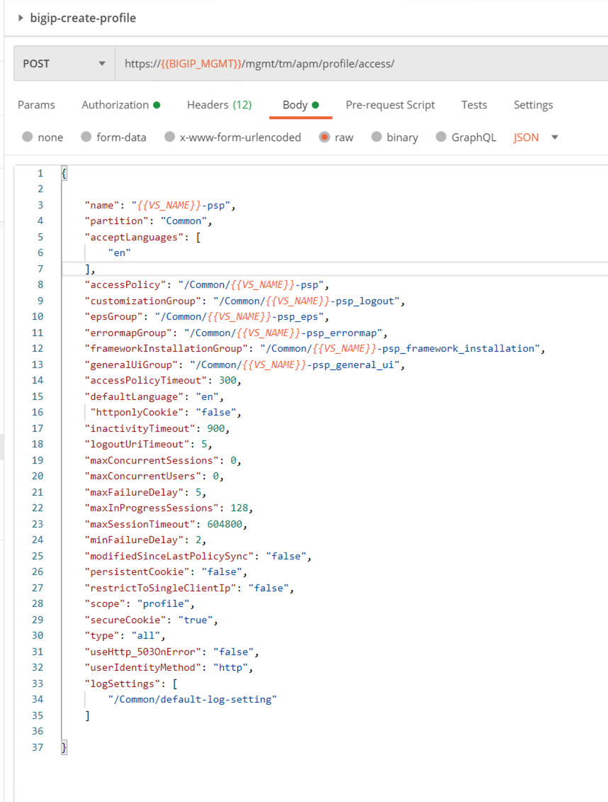
Expand the Commit Transaction subfolder.
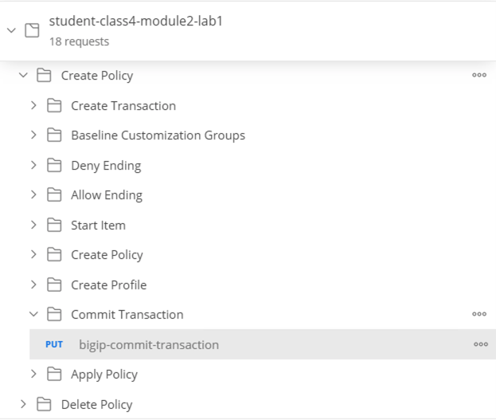
Click bigip-commit-transaction and then Body.
Notice the request is sent to the endpoint /mgmt/tm/transaction/ along with the transactionID using the PUT Method. The body contains the state JSON Key with the value VALIDATING. This request triggers the BIG-IP to process all the requests that contain the transactionID header. After the transaction is completed you will recieve a 200 OK. If you receive any status code but 200 OK, one or more of the requests in the transaction could not be completed.
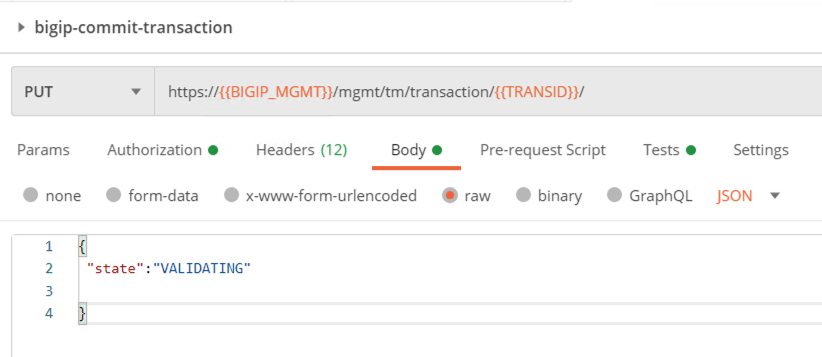
Expand the Apply Policy subfolder.
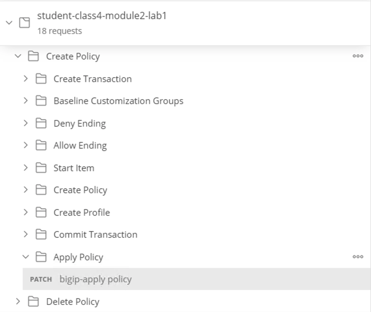
Click bigip-apply Policy and then Body
The Request is sent to the endpoint /mgmt/tm/apm/profile/access/ using the PATCH Method. When a patch is sent to the endpoint of a profile with the JSON body “generationAction”: “increment” it instructs the BIG-IP that you want to Apply Policy. Think commit changes.
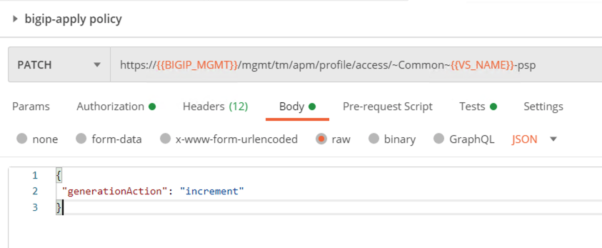
Task 4 - Create your first policy using automation¶
Now that we have walked through all the API calls required to create a policy through automation, we will use Postman Runner to create it.
Hover over the Collection name student-class4-module2-lab1 with your mouse and click the Arrow icon.
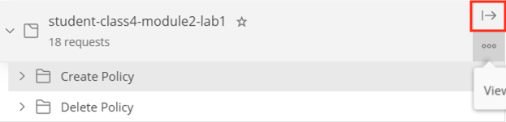
Click the Create Policy folder
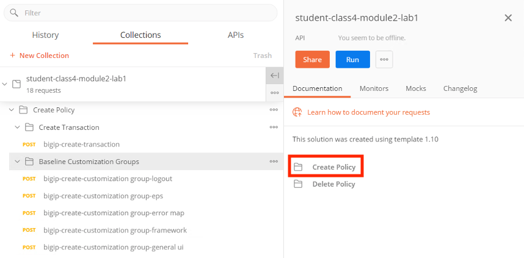
Click Run and Postman Runner will open.
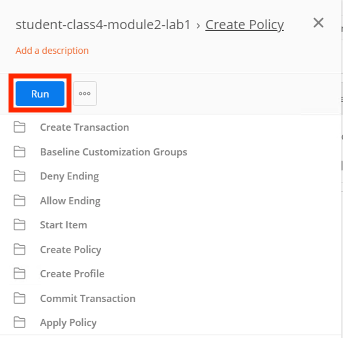
Click the blue button Run student-class… and the API requests will start being sent to the BIG-IP.
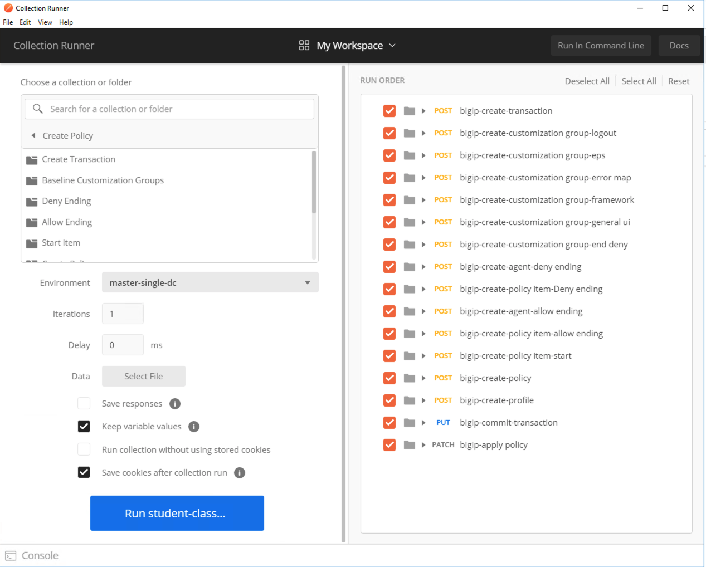
The Pass circle will display a value of two even through there were more requests than two. Postman will display either passed or failed for only the requests that contain Test conditions. In this example, only the Commit Transaction request and the Apply Policy request contain Tests. Another thing to note, The requests that contained the transaction ID will always receive a 200 OK unless sent to an invalid endpoint or the JSON is improperly formatted. Remember with a transaction, a request is not actually processed until the transaction is commited.
Close Runner by clicking the X in the top right corner.
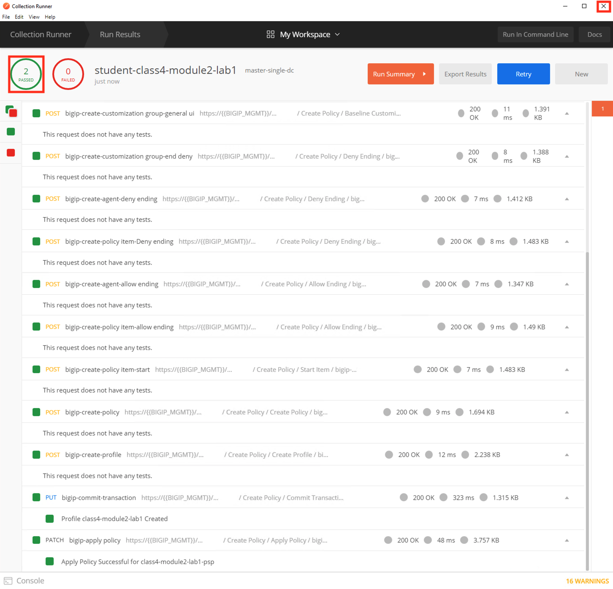
Collapse the main Create Policy folder so only two folders are displayed in the collection
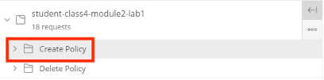
Open a browser and navigate to https://bigip1.f5lab.local
Login to the BIG-IP GUI with the following credentials:
- Username: admin
- Password: admin
Navigate to Access>>Profiles/Policies>>Access Profiles (Per-Session Policies). Do not click the plus symbol.

The policy you created via automation is displayed. Click Edit.
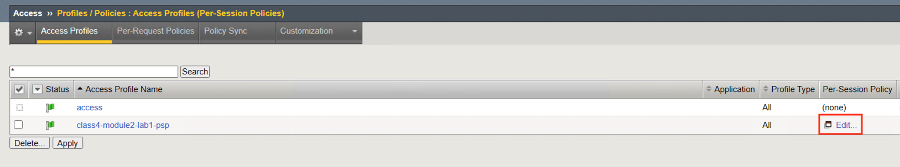
The policy is empty as planned. This collection of requests is a baseline for creating anything in APM regarfless of how basic or complex the Access Policy.
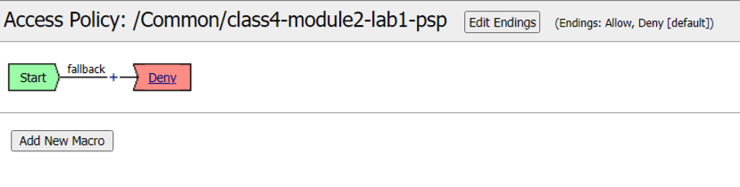
Task 5 - Deleting an Access Profile¶
From Postman, Expand the Delete Policy subfolder.
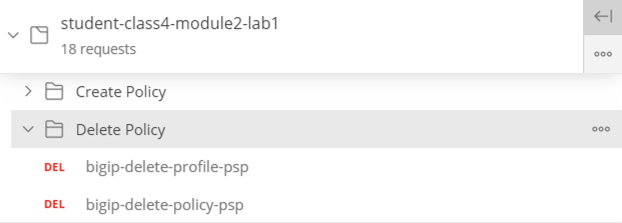
The first thing you will notice is it takes fewer requests to delete a policy than it does to create it. In order to delete a policy you need to first delete the profile and then the policy.
Click bigip-delete-profile-psp. To delete a profile you send a DELETE request to the /mgmt/tm/apm/profile/access endpoint along with the Partition and profile name.
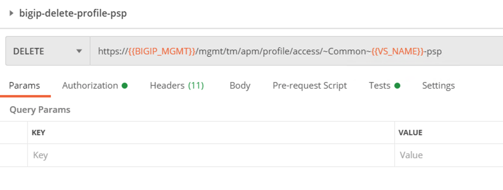
Click the blue send button in the upper right corner. You will receive a 200 OK response. This is an indication that the profile was found and deleted.
Click bigip-delete-policy-psp. To delete a policy you send a DELETE request to the /mgmt/tm/apm/policy/access-policy endpoint along with the partition and policy name.
Click the blue send button in the upper right corner. You will receive a 200 OK response. This is an indication that policy was found and deleted.
Open a browser and navigate to https://bigip1.f5lab.local
Login to the BIG-IP GUI with the following credentials:
- Username: admin
- Password: admin
Navigate to Access>>Profiles/Policies>>Access Profiles (Per-Session Policies). Do not click the + (plus symbol).
The Policy has been successfully deleted.
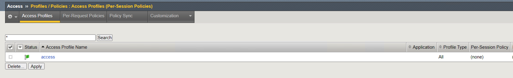
Task 6 - Lab Cleanup¶
From Postman, Click the 3 dots on the bottom right of the student-class4-module2-lab1 Collection.
Click Delete
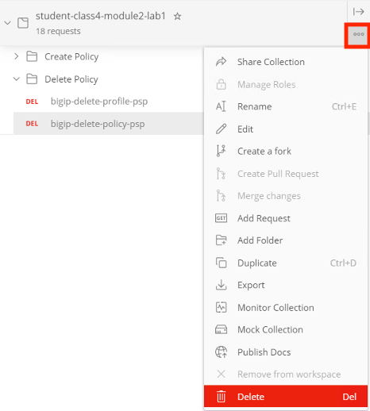
This concludes the lab on building a baseline Access Policy